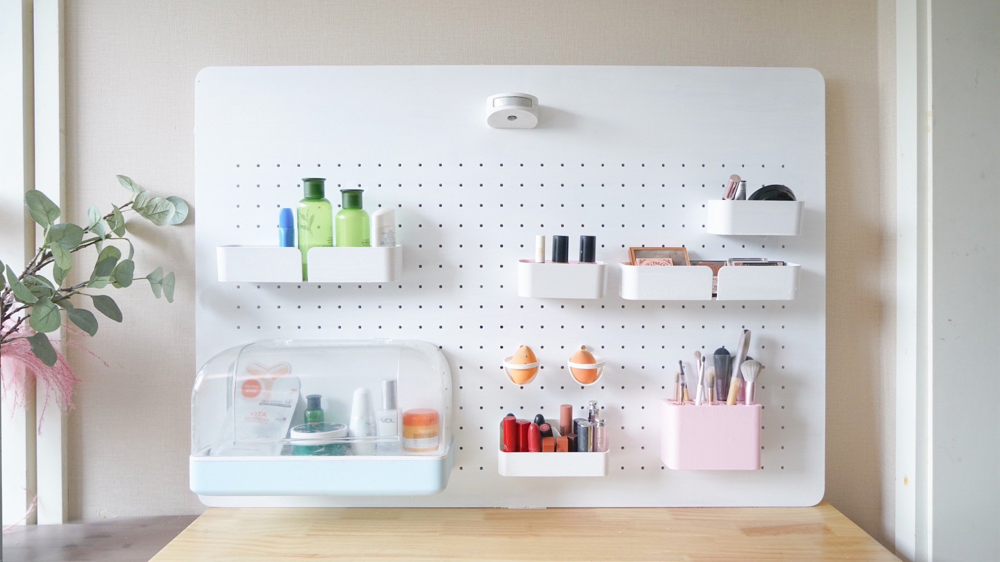

MakeUP 美咔

Brief Introduction
MakeUP is an IoT solution which includes a set of hardware product and a Wechat Mini Program, aiming at improving the user experience of managing cosmetics and skin-care products. It tries to solve the pain points and create fluent experience when users sort out, manage and buy cosmetics and skin-care products. It is a course project of Design of Information Product, taught by Prof. Sun Lingyun, ZJU. I got the highest mark (98 out of 100) for outstanding contribution to the team as well as the course conference.
Highlights
- Examined the user’s pain points and needs under cosmetic-using situation and figured out unique design direction.
- Designed the appearance and structure of the product, delivered a half-function prototype with Arduino, Raspberry Pi or so.
- Empowered design with Artificial Intelligence, considered the machine-learning life-cycle and tried to avoid to become a bad AI design.